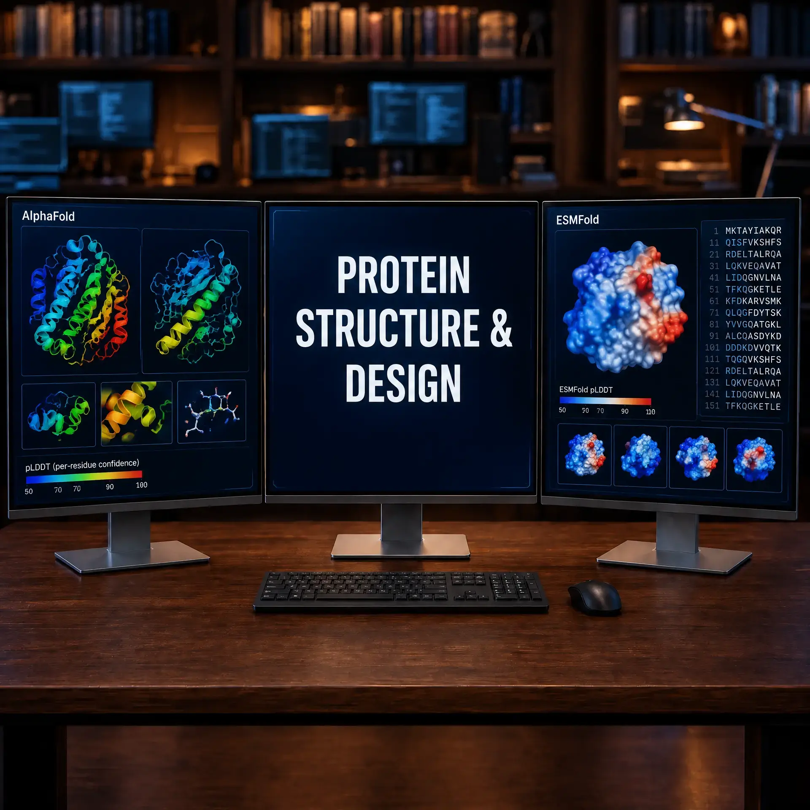

Retrieve an AlphaFold DB model and assess pLDDT
Nasir Mahmood Abbasi, PhD
Bioinformatics Educator

Use a UniProt accession to retrieve a precomputed AlphaFold Database (AlphaFold DB) structure, keep a record of which file you analyzed, and summarize its per-residue confidence. The workflow does not predict a new structure or design a protein.
Format: Conceptual guide. For learners who can run basic shell and Python commands: retrieve the supplied public UniProt example and review its provenance and pLDDT summary. The workflow fetches its inputs from AlphaFold DB; no local structure fixture is supplied.
Goal and prerequisites
By the end, you will have an API response, the PDB file advertised for the selected entry, and a JSON report containing its source URL, file hash, chain/residue identifiers, and summary of Cα B-factor values. For a verified AlphaFold-predicted file, those B-factor values represent pLDDT. The report is an inspection aid, not a biological validation.
Use Python 3.9 or newer and a shell. The explicit fetch step needs internet access; offline analysis and the included tests do not. No GPU, API key, paid service, or biological sample is needed. This lesson uses hemoglobin subunit alpha (UniProt P69905) as a public example.
Database retrieval is not a new prediction
AlphaFold DB archives precomputed predictions and its API returns model metadata and file URLs for a UniProt accession. Fetching an entry is different from submitting a sequence to AlphaFold 3 Server. A single-protein database entry cannot substitute for a new complex or ligand-containing prediction. AlphaFold 3 job submission and ESM generation are outside this lesson.
Retrieve and inspect a model
1. Fetch the API-advertised file
Download the provided utility into a clean directory, then run the explicit fetch command. It queries the AlphaFold DB API and uses the HTTPS PDB URL returned there; it does not construct a versioned filename. Output creation is exclusive, so an existing result is not silently replaced.
mkdir -p afdb-qc
cd afdb-qc
curl -fL https://theomicshub.com/files/protein_structure_workflow.py -o protein_structure_workflow.py
python3 protein_structure_workflow.py fetch P69905 --outdir resultsTo repeat the retrieval without disturbing the original files, stay in afdb-qc/ and choose a new output directory. The first run remains available for comparison; do not delete its API response, PDB, or QC report if you need to retain that run's provenance.
python3 protein_structure_workflow.py fetch P69905 --outdir results-rerunUse the new run's report and PDB together when checking its recorded hash and residue summary. If either directory already exists from a prior run, select another fresh name rather than overwriting or removing evidence.
You can also download protein_structure_workflow.py. The accession identifies the API lookup; the response supplies the model URL and version metadata. If you already have a PDB file, skip the network request:
python3 protein_structure_workflow.py analyze path/to/model.pdb
# Optional report file; fails rather than overwriting an existing report:
python3 protein_structure_workflow.py analyze path/to/model.pdb --out qc.json2. Check the outputs and provenance
A successful fetch writes three files under results/:
P69905_alphafold_api.json: API response used to select the model, including its advertised URL and version metadata.P69905_alphafold.pdb: bytes downloaded from that URL.P69905_alphafold_qc.json: model identifier/version, source URL, PDB SHA-256, chain and residue values, and summary statistics.
The report includes the number of parsed Cα residues, chains, mean/minimum/maximum B-factor, and one record per chain/residue/insertion-code key. These values describe the file processed in that run. The mean is not a pass/fail score and does not support a biological conclusion by itself.
Before calling B-factors pLDDT: confirm that the file came from the intended AlphaFold DB entry. Offline analysis deliberately reports B-factors without asserting provenance.
Worked example: P69905, model version 6
The complete standard-Python fetch workflow was run against the API-advertised AF-P69905-F1 model, version 6. The downloaded file parsed as one chain with 142 Cα residues; mean Cα value was 98.064, with a minimum of 65.38 and maximum of 98.88.
| Field | Observed value |
|---|---|
| Model version | 6 |
| Cα residues / chain | 142 / A |
| Mean Cα pLDDT | 98.064 |
| Minimum / maximum | 65.38 / 98.88 |
A high mean can obscure a less-confident segment. These measurements identify this particular file; a later database version may differ. The SHA-256 recorded for the fetched file was d9d7ad4607164de17b65767b467d366909d74f96df5176ee368a9a515aaa1911. A matching hash helps identify bytes, but does not independently establish scientific validity or authenticity.
To compare the local PDB bytes with the QC report and print the five lowest-confidence parsed residues:
python3 - <<'PY'
from pathlib import Path
import hashlib, json
folder = Path("results")
report = json.loads((folder / "P69905_alphafold_qc.json").read_text())
actual = hashlib.sha256((folder / "P69905_alphafold.pdb").read_bytes()).hexdigest()
assert actual == report["pdb_sha256"], "PDB bytes changed after the recorded run"
for residue in sorted(report["residues"], key=lambda row: row["bfactor"])[:5]:
print(residue["chain"], residue["residue_id"], residue["bfactor"])
PYInspect lower-confidence residues in a structure viewer as a next step. This utility does not validate atom geometry, infer interactions, or calculate PAE.
If automated download is blocked
Network policy or service availability can prevent a fetch. The script reports failure instead of recording an incomplete download as successful. Open the P69905 API response, retain the metadata, and use the pdbUrl it advertises to obtain the matching PDB through the official service. Do not guess a versioned URL or substitute another PDB. Then analyze the local file:
python3 protein_structure_workflow.py analyze downloaded_model.pdb --out offline_qc.jsonThe parser supports one PDB model, integer residue identifiers, and blank/A alternate conformers. It rejects unsupported multiple-model files and malformed Cα records; it is not a general-purpose PDB/mmCIF parser. It limits downloaded and local input data to 10 MiB.
3. Run the offline software tests
The companion tests use constructed PDB text fixtures and exercise parsing and failure handling. Download test_protein_structure_workflow.py beside the utility and run:
python3 -m unittest -v test_protein_structure_workflow.pyPassing these tests demonstrates behavior on small synthetic inputs. It is not evidence that an arbitrary model is biologically accurate or that the live service is available.
Interpret pLDDT with its scope in mind
For AlphaFold-predicted structures, the PDB B-factor field stores pLDDT, a per-residue estimate of local model confidence on a 0–100 scale; higher values indicate greater local confidence. AlphaFold DB uses these rough bands: above 90, very high; 70–90, confident; 50–70, low; below 50, very low. They are interpretive guides, not probability that a protein functions or that a coordinate is experimentally correct.
Look at the residue-level pattern rather than relying on a chain-wide average. pLDDT is local: high values do not establish domain orientation, oligomeric state, binding, function, stability, or experimental accuracy. The database provides predicted aligned error (PAE) for assessing uncertainty in relative domain positions; this script does not parse it.
The parser keeps one Cα per chain/residue/insertion-code key, preferring a blank alternate-location record over alternate A. It validates finite B-factor values within 0–100. The offline mode cannot tell whether the input is an AlphaFold structure, so confirm its provenance first. Experimental PDB B-factors are not pLDDT; they generally describe atomic displacement, and occupancy is a separate field.
Scope and failure cases
- An invalid accession is rejected before a network request; no matching API entry or no advertised PDB URL also causes an explicit error.
- If an API response contains multiple matching model entries, the utility stops rather than selecting one ambiguously. Choose the intended model from the official database and analyze that file offline.
- Duplicate Cα records for the same alternate location, non-finite/out-of-range values, missing Cα records, unsupported multi-model files, and files over the 10 MiB limit fail rather than being silently repaired.
- The script is limited to PDB input and a small per-residue confidence summary. It does not parse mmCIF or PAE, validate geometry, align structures, or evaluate a design.
- Predictions are hypotheses. Do not use this report alone to claim biological function or make design or therapeutic decisions.
Official sources
- AlphaFold DB API documentation: prediction endpoint and returned model-file URL metadata.
- AlphaFold DB FAQs: pLDDT, confidence guidance, and PAE.
- EMBL-EBI training: pLDDT and local confidence.
- Jumper et al. (2021), AlphaFold, Nature.
Software and package behaviour can change. Please re-check commands against the official documentation. If a command does not work, you find an error, or the tutorial is no longer reproducible, please report it through the Contact page
Author: Nasir Mahmood Abbasi, PhD - Category: AI-Driven Research & Agentic Bioinformatics